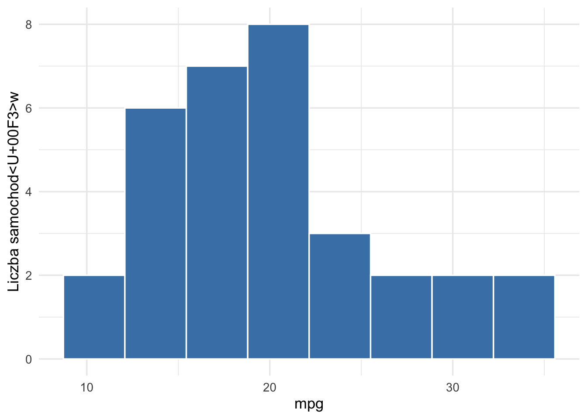
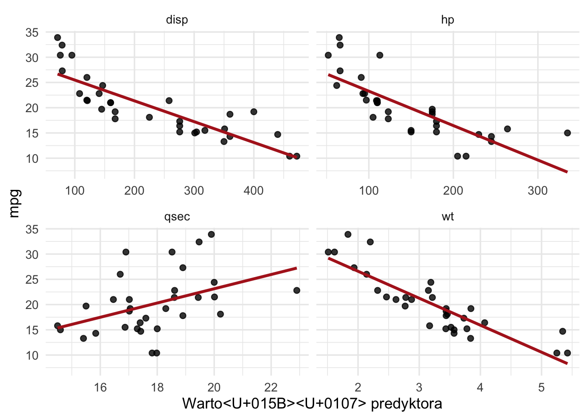
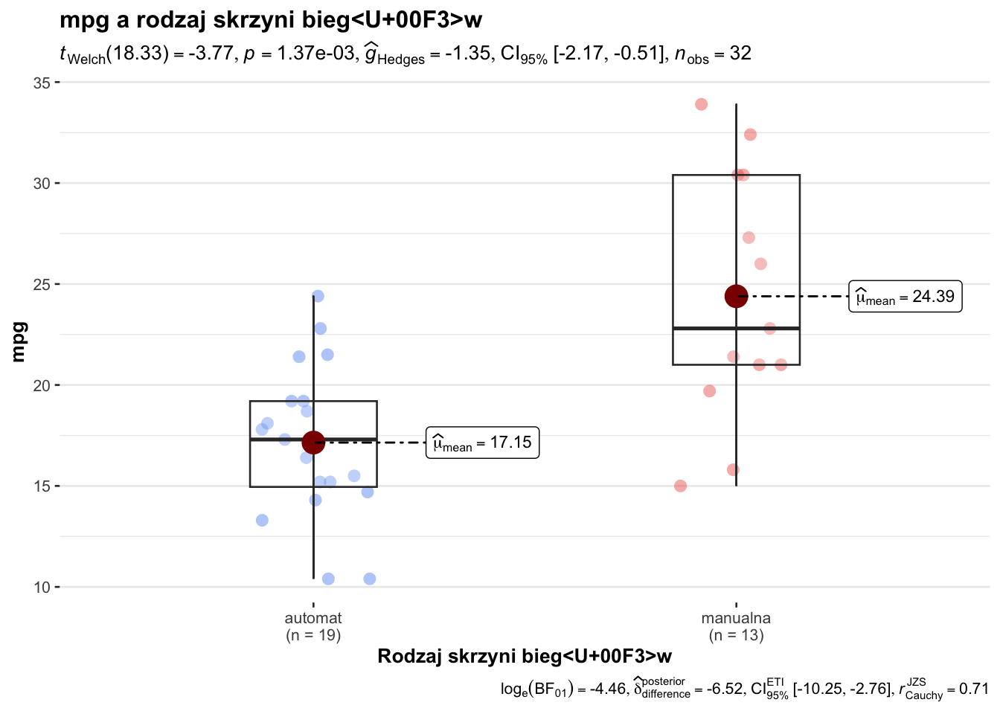
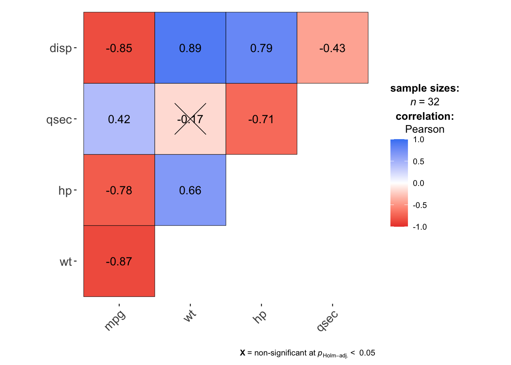
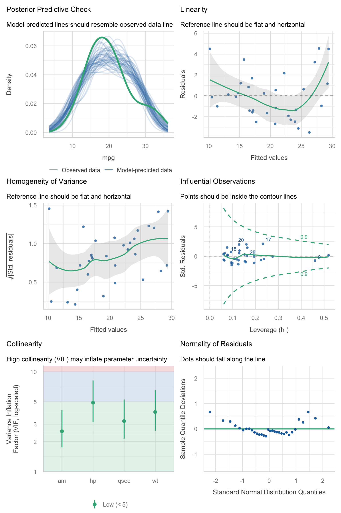

W tym rozdziale pokażemy kompletny przykład problemu badawczego, w którym celem jest predykcja wartości zmiennej liczbowej na podstawie danych tabularycznych. Zrobimy to krok po kroku, używając modelu regresji liniowej.
Przykład został tak dobrany, aby można go było odtworzyć bez przygotowywania osobnego zbioru danych. Skorzystamy z wbudowanego w R zbioru mtcars, zawierającego charakterystyki techniczne 32 samochodów.
AdnotacjaCo będzie wynikiem tej analizy?
Na końcu będziemy umieli odpowiedzieć na pytanie, jak na podstawie kilku cech samochodu przewidzieć jego efektywność paliwową oraz które cechy mają największy związek z tą efektywnością.
Formułowanie celu i problemów badawczych
Cel badawczy
Chcemy zbudować model, który będzie przewidywał efektywność paliwową samochodu na podstawie jego parametrów technicznych.
W zbiorze mtcars zmienna mpg oznacza liczbę mil, które samochód przejedzie na jednym galonie paliwa. Im większa wartość mpg, tym samochód jest bardziej oszczędny.
WażneJasne określenie celu
Cel predykcyjny: przewidywanie wartości zmiennej mpg dla samochodu na podstawie danych tabularycznych opisujących jego konstrukcję.
Zmienna objaśniana i zmienne objaśniające
Zmienna objaśniana (zależna, przewidywana):mpg
Potencjalne zmienne objaśniające (predyktory):
wt - masa samochodu w tysiącach funtów,
hp - moc silnika,
qsec - czas przejazdu 1/4 mili w sekundach,
am - rodzaj skrzyni biegów (automat lub manualna),
disp - pojemność skokowa silnika.
Problem badawczy
Interesuje nas odpowiedź na następujące pytania:
Czy na podstawie kilku prostych cech technicznych można trafnie przewidywać mpg?
Który zestaw predyktorów daje najlepszy kompromis między prostotą modelu a jakością predykcji?
Czy przyjęty model spełnia podstawowe założenia regresji liniowej?
Jak interpretować współczynniki modelu w języku problemu badawczego?
Jednostka obserwacji
Pojedynczą obserwacją jest tutaj jeden samochód. Każdy wiersz tabeli danych opisuje jeden obiekt.
Metodyka
Idea regresji liniowej
Regresja liniowa opisuje średnią wartość zmiennej objaśnianej jako liniową funkcję zmiennych objaśniających. W najogólniejszej postaci model zapisujemy jako
\(Y_i\) to wartość zmiennej objaśnianej dla \(i\)-tej obserwacji,
\(X_{ij}\) to wartość \(j\)-tego predyktora dla \(i\)-tej obserwacji,
\(\beta_0, \beta_1, \dots, \beta_p\) to nieznane parametry modelu,
\(\varepsilon_i\) to składnik losowy, czyli część zmienności niewyjaśniona przez model.
W naszym przykładzie model będzie przewidywał mpg na podstawie cech samochodu.
Co oznaczają współczynniki modelu?
Wyraz wolny \(\beta_0\) jest punktem odniesienia modelu.
Współczynnik \(\beta_j\) mówi, o ile przeciętnie zmieni się wartość zmiennej objaśnianej, gdy predyktor \(X_j\) wzrośnie o 1 jednostkę, przy założeniu stałości pozostałych predyktorów.
To bardzo ważne: w regresji wielorakiej interpretujemy wpływ danej zmiennej przy kontrolowaniu pozostałych zmiennych.
Założenia modelu regresji liniowej
Aby wyniki modelu były wiarygodne, sprawdzamy następujące założenia:
Liniowość zależności: średni związek między mpg a predyktorami można opisać liniowo.
Niezależność obserwacji: błędy dla różnych obserwacji nie wpływają na siebie.
Stałość wariancji reszt: rozrzut błędów jest podobny dla różnych poziomów wartości dopasowanych.
Przybliżona normalność reszt: potrzebna głównie do klasycznej inferencji statystycznej.
Brak silnej współliniowości: predyktory nie powinny przenosić prawie tej samej informacji.
WskazówkaUwaga praktyczna
Do samej predykcji najważniejsze są trafność przewidywań i stabilność modelu. Normalność reszt nie jest warunkiem koniecznym do liczenia prognoz, ale jest ważna, gdy chcemy interpretować testy istotności i przedziały ufności.
Estymacja parametrów modelu
Najczęściej parametry regresji liniowej estymujemy metodą najmniejszych kwadratów (MNK, ang. OLS - ordinary least squares). Jej idea jest prosta: wybieramy takie wartości parametrów, aby suma kwadratów reszt była jak najmniejsza.
Jeśli oznaczymy przez \(e_i = y_i - \hat{y}_i\) resztę dla \(i\)-tej obserwacji, to minimalizujemy funkcję:
Jeżeli dodatkowo założymy normalność błędów, to estymator MNK jest jednocześnie estymatorem największej wiarygodności. W praktyce oznacza to, że ta sama procedura ma mocne uzasadnienie zarówno algebraiczne, jak i probabilistyczne.
Zanim zbudujemy model, dobrze jest zobaczyć dane. Pozwala to zorientować się, czy związki między zmiennymi mają sens oraz czy nie widać od razu problemów z obserwacjami odstającymi.
Krótka charakterystyka liczbowych zmiennych
Kod
dane |>select(mpg, wt, hp, qsec, disp) |> report::report_table() %>%print_html()
Variable
n_Obs
Mean
SD
Median
MAD
Min
Max
Skewness
Kurtosis
n_Missing
mpg
32
20.09
6.03
19.20
5.41
10.40
33.90
0.67
-0.02
0
wt
32
3.22
0.98
3.33
0.77
1.51
5.42
0.47
0.42
0
hp
32
146.69
68.56
123.00
77.10
52.00
335.00
0.80
0.28
0
qsec
32
17.85
1.79
17.71
1.42
14.50
22.90
0.41
0.86
0
disp
32
230.72
123.94
196.30
140.48
71.10
472.00
0.42
-1.07
0
Rozkład zmiennej objaśnianej
Kod
ggplot(dane, aes(x = mpg)) +geom_histogram(bins =8, color ="white", fill ="steelblue") +labs(x ="mpg", y ="Liczba samochodów") +theme_minimal(base_size =13)

Rozkład zmiennej mpg
Zależność mpg od wybranych predyktorów
Kod
wykres_dlugie <- dane |>select(mpg, wt, hp, qsec, disp) |>pivot_longer(-mpg, names_to ="zmienna", values_to ="wartosc")ggplot(wykres_dlugie, aes(x = wartosc, y = mpg)) +geom_point(size =2, alpha =0.8) +geom_smooth(method ="lm", se =FALSE, color ="firebrick") +facet_wrap(~zmienna, scales ="free_x") +labs(x ="Wartość predyktora", y ="mpg") +theme_minimal(base_size =13)

Relacje między mpg a wybranymi predyktorami liczbowymi
Na wykresach widać, że mpg maleje wraz ze wzrostem masy samochodu (wt), mocy (hp) i pojemności silnika (disp). Związek z qsec jest dodatni, co sugeruje, że samochody osiągające dłuższy czas przejazdu 1/4 mili bywają bardziej oszczędne.
Zależność mpg od rodzaju skrzyni biegów
Kod
ggbetweenstats(data = dane,x = am,y = mpg,title ="mpg a rodzaj skrzyni biegów",xlab ="Rodzaj skrzyni biegów",ylab ="mpg",violin.args =list(width =0))

Efektywność paliwowa a rodzaj skrzyni biegów
Macierz korelacji zmiennych liczbowych

Na tym etapie warto zauważyć, że część predyktorów jest ze sobą skorelowana, zwłaszcza wt, hp i disp. To sygnał, że przy budowie modelu trzeba uważać na współliniowość.
Budowa modelu
Podział danych na próbę treningową i testową
Ponieważ naszym głównym celem jest predykcja, podzielimy dane na część treningową i testową. Modele dopasujemy na danych treningowych, a ich jakość predykcji ocenimy na danych testowych.
Przy zaledwie 32 obserwacjach podział 70/30 daje około 22 obserwacje treningowe i 10 testowych. Przy 4–5 predyktorach to bardzo mała próba — RMSE na zbiorze testowym będzie niestabilny. Dla tak małego zbioru bardziej wiarygodna byłaby walidacja krzyżowa (np. LOOCV). Podział train/test stosujemy tu przede wszystkim w celach dydaktycznych.
Modele kandydackie
Rozważymy cztery modele o rosnącej złożoności:
Model 1: tylko masa samochodu.
Model 2: masa i moc silnika.
Model 3: masa, moc, czas przejazdu 1/4 mili i rodzaj skrzyni biegów.
Model 4: jak wyżej, ale dodatkowo pojemność silnika.
Kod
model_1 <-lm(mpg ~ wt, data = trening)model_2 <-lm(mpg ~ wt + hp, data = trening)model_3 <-lm(mpg ~ wt + hp + qsec + am, data = trening)model_4 <-lm(mpg ~ wt + hp + qsec + am + disp, data = trening)modele <-list("Model 1"= model_1,"Model 2"= model_2,"Model 3"= model_3,"Model 4"= model_4)rmse <-function(y, yhat) {sqrt(mean((y - yhat)^2))}porownanie_modeli <-tibble(model =names(modele),liczba_predyktorow =c(1, 2, 4, 5),adj_r2_trening =map_dbl(modele, ~summary(.x)$adj.r.squared),aic_trening =map_dbl(modele, AIC)) |>mutate(across(where(is.numeric), ~round(.x, 3)))
Por<U+00F3>wnanie modeli kandydackich
model
liczba_predyktorow
adj_r2_trening
aic_trening
Model 1
1
0.734
120.707
Model 2
2
0.814
113.748
Model 3
4
0.842
111.678
Model 4
5
0.835
113.217
Wybór modelu końcowego
Na podstawie miar dopasowania na zbiorze treningowym, model 3 osiąga wyraźnie lepszy skorygowany \(R^2\) i niższe AIC niż modele prostsze. Model 4, mimo dodatkowego predyktora (disp), nie poprawia istotnie tych miar, a jest bardziej złożony.
To dobry przykład praktycznej zasady: najlepszy model to nie zawsze model najbardziej złożony, lecz taki, który daje dobry kompromis między trafnością, stabilnością i interpretowalnością.
Dopasowanie modelu końcowego na pełnych danych
Po wyborze struktury modelu dopasujmy go ponownie na całym zbiorze danych, aby wykorzystać wszystkie dostępne obserwacje do estymacji parametrów.
Kod
model_koncowy <-lm(mpg ~ wt + hp + qsec + am, data = dane)model_parameters(model_koncowy) |>print_html()
Model Summary
Parameter
Coefficient
SE
95% CI
t(27)
p
(Intercept)
17.44
9.32
(-1.68, 36.56)
1.87
0.072
wt
-3.24
0.89
(-5.06, -1.41)
-3.64
0.001
hp
-0.02
0.01
(-0.05, 0.01)
-1.25
0.223
qsec
0.81
0.44
(-0.09, 1.71)
1.85
0.076
am (manualna)
2.93
1.40
(0.06, 5.79)
2.09
0.046
Aby ocenić wpływ poszczególnych zmiennych liczymy również standaryzowane współczynniki modelu.
Kod
X <-model.matrix(model_koncowy)[, -1, drop =FALSE] # macierz predyktorów (dokładnie tak, jak w modelu)y_sd <-sd(model.response(model.frame(model_koncowy))) # sd(y)beta_raw <-coef(model_koncowy)[-1] # współczynniki bez wyrazu wolnegox_sd <-apply(X, 2, sd) # sd każdej kolumny Xbeta_std <- beta_raw * x_sd / y_sd # znormalizowane betatibble(variable =names(beta_std),beta_raw =as.numeric(beta_raw),sd_x =as.numeric(x_sd),sd_y = y_sd,beta_std =as.numeric(beta_std)) |>arrange(desc(abs(beta_std))) |>gt() |>fmt_number(columns =2:5, decimals =3)
variable
beta_raw
sd_x
sd_y
beta_std
wt
−3.238
0.978
6.027
−0.526
ammanualna
2.926
0.499
6.027
0.242
qsec
0.811
1.787
6.027
0.240
hp
−0.018
68.563
6.027
−0.201
Ocena dopasowania modelu
Do oceny dopasowania wykorzystamy kilka miar.
\(R^2\) i skorygowany \(R^2\) mówią, jaka część zróżnicowania mpg została wyjaśniona przez model dopasowany na pełnych danych.
Błąd standardowy reszt informuje o typowej skali błędu dopasowania modelu końcowego.
RMSE na zbiorze testowym mówi, jak duży jest przeciętny błąd prognozy dla nowych obserwacji — obliczony na podstawie modelu estymowanego wyłącznie na danych treningowych.
Wybrane miary dopasowania modelu ko<U+0144>cowego
miara
wartosc
R2
0.858
Skorygowany R2
0.837
B<U+0142><U+0105>d standardowy reszt
2.435
RMSE na zbiorze testowym
2.125
W tym przykładzie model wyjaśnia dużą część zmienności mpg, a przeciętny błąd predykcji na zbiorze testowym jest stosunkowo niewielki. To oznacza, że model może być użyteczny jako narzędzie prognostyczne, choć oczywiście nie daje prognoz idealnych.
Sprawdzanie założeń
Wykresy diagnostyczne
Kod
check_model(model_koncowy)

Podstawowe wykresy diagnostyczne modelu końcowego
Test normalności reszt i kontrola obserwacji wpływowych
Wartość p-value w teście Shapiro-Wilka wynosi 0.0713, więc przy poziomie istotności 0.05 nie ma podstaw do odrzucenia hipotezy o normalności reszt. Oznacza to, że założenie normalności można uznać za w przybliżeniu spełnione, choć wynik jest dość bliski granicy istotności.
Współczynniki VIF są umiarkowane, więc nie obserwujemy skrajnej współliniowości (gdy VIF>10 jest to niepokojące).
Maksymalna odległość Cooka wynosi 0.27, a więc przekracza pomocniczy próg \(4/n =\) 0.125. To sugeruje, że w danych może występować co najmniej jedna obserwacja o podwyższonym wpływie na wyniki modelu, którą warto dodatkowo sprawdzić.
Wykres wartości dopasowanych vs. reszt (panel Linearity generowany przez check_model()) pozwala ocenić liniowość zależności. Jeśli widoczna jest systematyczna krzywoliniowość, założenie liniowości może być naruszone. W naszym przypadku wykres sugeruje pewne odchylenia od liniowości dla skrajnych wartości dopasowanych, co warto mieć na uwadze.
Na tej podstawie można uznać, że model jest akceptowalny diagnostycznie, ale zawiera przynajmniej jedną potencjalnie wpływową obserwację oraz sygnały ewentualnej nieliniowości, co należy mieć na uwadze przy interpretacji wyników.
W praktyce budowa modelu często wymaga korekt. W naszym przykładzie korekta polegała przede wszystkim na uproszczeniu modelu — pominięciu zmiennej disp.
Warto też zauważyć, że nie każda zmienna musi być istotna statystycznie sama w sobie, aby była użyteczna w modelu predykcyjnym. W modelach prognostycznych liczy się przede wszystkim jakość przewidywania dla nowych danych.
Gdyby diagnostyka była słabsza, można byłoby rozważyć:
transformację zmiennej objaśnianej, np. logarytmowanie,
usunięcie obserwacji wyraźnie odstających po wcześniejszym uzasadnieniu merytorycznym,
dodanie interakcji lub składników nieliniowych,
zastosowanie regresji odpornej albo metod regularizacji.
Predykcja na zbiorze testowym
Prognozę dla obserwacji testowych obliczamy na podstawie modelu estymowanego wyłącznie na danych treningowych (model_3), aby uzyskać rzetelne oszacowanie jakości predykcji out-of-sample.
Kod
pred <-predict(model_3, newdata = test)bind_cols(test, pred = pred) |>gt() |>fmt_number(columns = pred, decimals =2)
samochod
mpg
wt
hp
qsec
am
disp
pred
Mazda RX4
21.0
2.620
110
16.46
manualna
160.0
23.65
Mazda RX4 Wag
21.0
2.875
110
17.02
manualna
160.0
23.35
Hornet 4 Drive
21.4
3.215
110
19.44
automat
258.0
20.95
Valiant
18.1
3.460
105
20.22
automat
225.0
20.98
Merc 450SE
16.4
4.070
180
17.40
automat
275.8
14.99
Merc 450SL
17.3
3.730
180
17.60
automat
275.8
16.25
Lincoln Continental
10.4
5.424
215
17.82
automat
460.0
10.38
Toyota Corona
21.5
2.465
97
20.01
automat
120.1
24.10
Camaro Z28
13.3
3.840
245
15.41
automat
350.0
12.61
Pontiac Firebird
19.2
3.845
175
17.05
automat
400.0
15.49
Interpretacja wyników w kontekście problemu
Teraz przejdźmy do najważniejszej części: co ten model mówi o badanym problemie?
Interpretacja współczynników
Przy pozostałych zmiennych utrzymanych na stałym poziomie:
Wzrost masy samochodu o 1 tysiąc funtów wiąże się przeciętnie ze spadkiem mpg o około 3.24.
Wzrost mocy silnika o 1 KM wiąże się przeciętnie ze spadkiem mpg o około 0.018, choć w tym modelu efekt ten nie jest bardzo precyzyjnie oszacowany.
Wzrost qsec o 1 sekundę wiąże się przeciętnie ze wzrostem mpg o około 0.81.
Samochody z manualną skrzynią biegów mają przeciętnie mpg większe o około 2.93 niż samochody z automatyczną skrzynią biegów, przy tych samych pozostałych cechach.
AdnotacjaJak czytać te wyniki?
Nie mówimy tutaj, że dana zmienna “powoduje” zmianę mpg. Model regresji w tym przykładzie opisuje zależności i służy do predykcji. Interpretacja przyczynowa wymagałaby znacznie silniejszych założeń badawczych.
Które zmienne wydają się najważniejsze?
Najsilniejszy i najbardziej stabilny związek z mpg obserwujemy dla masy samochodu wt. To intuicyjny wynik: cięższe samochody są przeciętnie mniej oszczędne.
Rodzaj skrzyni biegów również wnosi istotną informację do modelu. Moc silnika i czas przejazdu 1/4 mili także pomagają poprawić trafność prognozy, choć ich interpretacja wymaga większej ostrożności ze względu na współzależności między cechami technicznymi pojazdu.
Wnioski
Na podstawie przeprowadzonej analizy możemy sformułować następujące wnioski:
Regresja liniowa może być skutecznym narzędziem do przewidywania wartości liczbowej dla danych tabularycznych.
W analizowanym przykładzie sensowną zmienną objaśnianą było mpg, a użytecznymi zmiennymi objaśniającymi okazały się wt, hp, qsec i am.
Wybrany model oferuje dobry kompromis między jakością predykcji, interpretowalnością i poprawnością diagnostyczną.
Najważniejszym predyktorem efektywności paliwowej okazała się masa samochodu.
Model ten nadaje się do celów dydaktycznych i do wstępnych prognoz, ale nie powinien być traktowany jako model uniwersalny dla wszystkich współczesnych pojazdów.
Diagnostyka wykazała pewne sygnały odchyleń od liniowości (widoczne na wykresie reszt vs. wartości dopasowanych), co sugeruje, że można byłoby szukać korekt postaci modelu (np. transformacji zmiennych lub składników nieliniowych), ale to wykracza poza zakres tych analiz.
Podsumowanie dydaktyczne
W praktyce pracy badawczej warto zapamiętać następującą sekwencję działań:
Najpierw jasno określ cel predykcyjny i wskaż zmienną objaśnianą.
Następnie wybierz sensowne zmienne objaśniające.
Sprawdź dane i zależności między zmiennymi.
Zbuduj kilka modeli konkurencyjnych.
Porównaj je nie tylko pod względem dopasowania, ale także jakości prognoz i interpretowalności.
Na końcu sprawdź założenia, opisz ograniczenia i sformułuj wnioski w języku problemu badawczego.